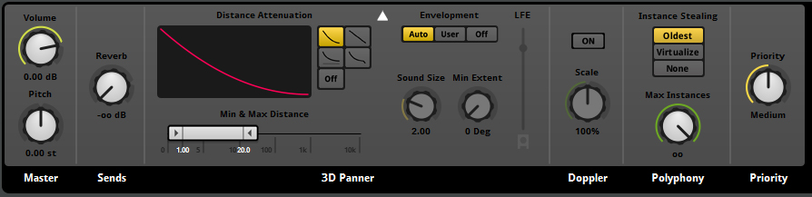
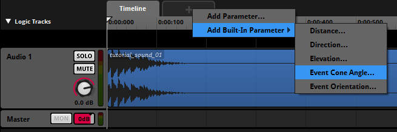
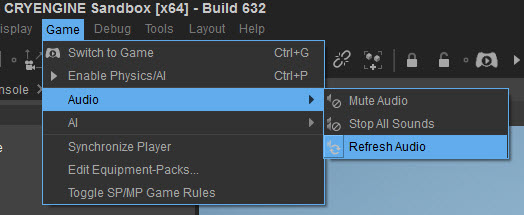
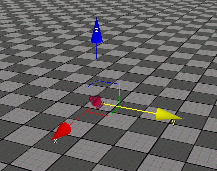

FMOD Studio and SpotFX
This tutorial explains how to make use of all the functionalities of FMOD Studio for sounds that are emitted from a spot location.
Setting up SpotFX in FMOD Studio and CRYENGINE
Setting up the Audio Trigger Spot Entity in CRYENGINE
Using the Audio Trigger Spot Entity
CRYENGINE uses the Audio Trigger Spot entity to playback FMOD Studio events that emit an audio sound from a spot location in your level. These sounds are called as SpotFX.
In FMOD Studio, there are multiple options to influence how sound will be heard (on an entity) when it's played back in the CRYENGINE.
The Audio Trigger Spot can be found in the Level Editor under Create Object->Audio. After selecting the Audio Trigger Spot entity you can place it anywhere in your level.
For a detailed explanation on how to correctly setup the Audio Trigger Spot entity in your level, follow the instructions found here.
Working with Attenuation
When you create a new sound event in FMOD Studio it will be a 3D sound (by default) with an attenuation curve defined. In the Deck area of the event, you can adjust the curve and distance of the attenuation.
Therefore, if you trigger a 2D sound at an Audio Trigger Spot, it will always sound the same regardless of the location of your character or the Audio Trigger Spot entity in your level.

After you have finished setting up the attenuation for your sound, you need to generate your Soundbanks and connect the audio system Trigger on the Audio Trigger Spot in your level.
You will notice that the sound is now being attenuated according to the distance of the listener to the Audio Trigger Spot entity.
Working with Cone Attenuation
Cone Attenuation functionality is another useful attenuation feature in FMOD Studio and it can be used inside CRYENGINE. This feature affects how the player hears the sound depending on their positioning around the sound emitting entity.
For example, a normal speaker can sound open and loud while standing in front of it, but it can sound more muffled and quiet when you stand behind it. This effect can be created in FMOD Studio by adding the built-in parameter Event Cone Angle to a sound event and automate the volume with it.
After you enable Cone Attenuation, you can recreate your Soundbanks and then reload them through the Refresh Audio menu option in CRYENGINE.


The y-axis of the Audio Trigger Spot will always point to the front of the Cone.

When you are now moving around the Audio Trigger Spot in game, you will hear the sound which gets attenuated accordingly. It will consider the distance and position of the listener with respect to the entity and it will attenuate the sound accordingly.
Other Use Cases for FMOD Studio Attenuation
The above explained behaviors are also relevant for audios that are not triggered by the Audio Trigger Spot. The FMOD Studio Attenuation can also be used to setup audio system Triggers that can be called for Material Effects, Particles, or Animations.
If you want to learn how to connect the audio system Triggers for those use cases, then take a look at the pages under Audio Overview.
Randomizing Sound on the Audio Trigger Spot
The Audio Trigger Spot offers randomization features which allow the re-triggering of a sound at a certain time and radius. For example, this can be used to simulate seagulls which can be heard at different points in time and in different positions in the sky.
An example of this setup can be found in the CRYENGINE Sandbox Editor showcase levels.
- Select the event with Multi Sound effect in FMOD Studio and make sure its Playlist is set to randomize and not looping.
- Randomized re-triggering:
- In CRYENGINE, select the Audio Trigger Spot, and then enable PlayRandom in the Properties tab.
- Set a value for MinDelay and MaxDelay to define the time range in which the audio system Trigger will be re-triggered.
- Randomized Panning:
- In CRYENGINE, enable the PlayOnX/PlayOnY/PlayOnZ check box to enable randomization of the sound position on a desired axis of the Audio Trigger Spot.
- Set a value for RadiusRandom to define the range in which the sound can be randomized.
Setting up this functionality in CRYENGINE is more performance effective, when you use Obstruction/Occlusion on the Audio. The randomized positioning also considers the Obstruction/Occlusion of other materials placed between the spawn point of the sound and the listener's position.
You can learn more about Obstruction and Occlusion in CRYENGINE here.